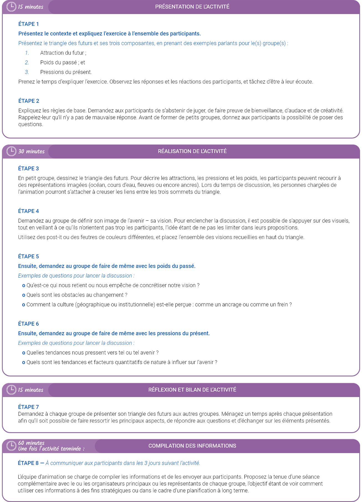
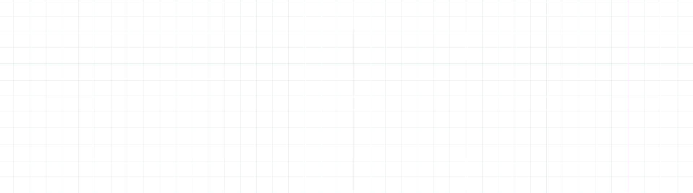
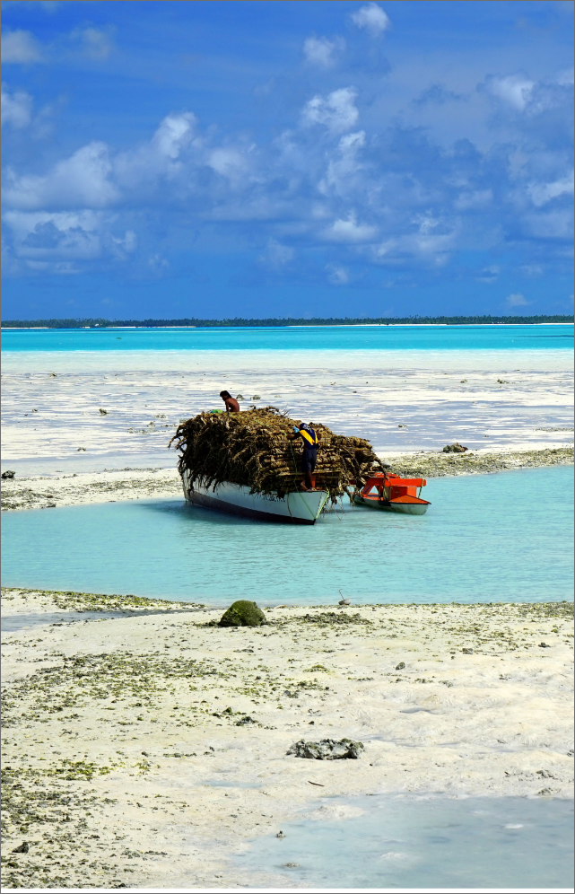
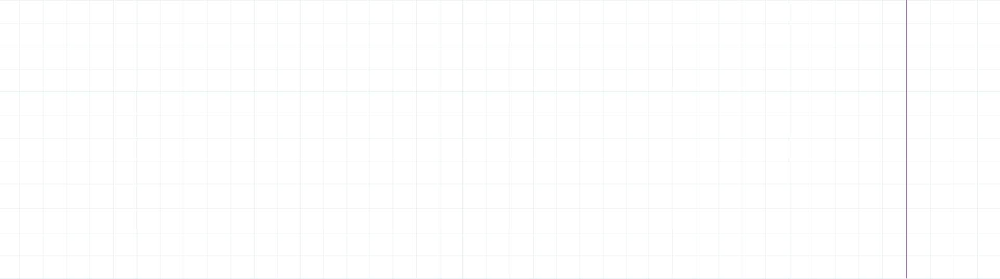
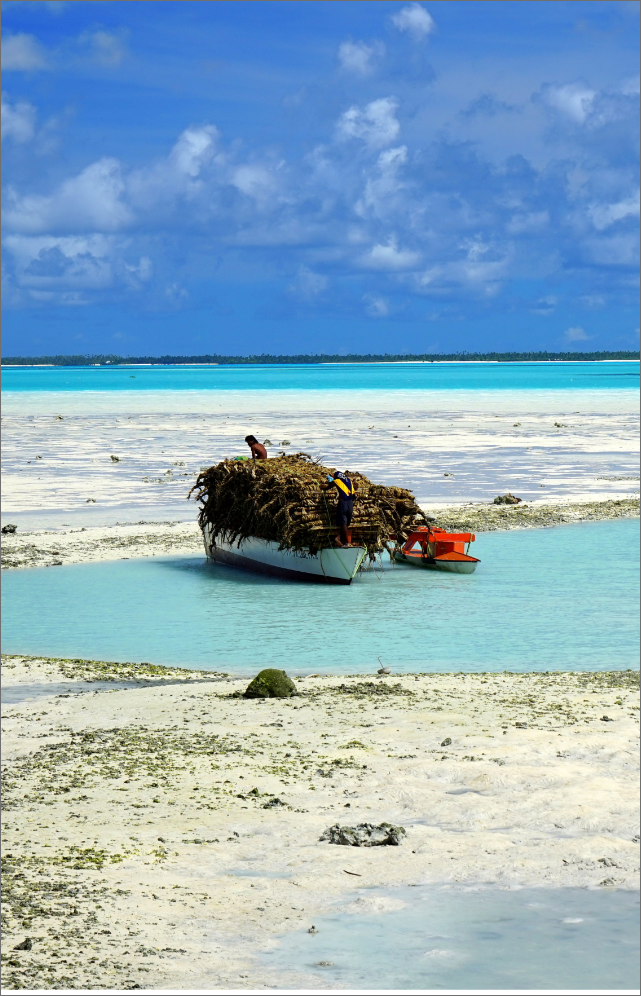

A tool that identifies what our vision for the future is (“pulls”), what is pushing us towards the future (“pushes”) and what is holding us back from achieving our vision (“weights”).
With stakeholders or staff to develop a vision for a strategy, generate buy-in for a change or explore newfound threats or opportunities. It is most valuable in a group setting but can be used as part of an independent analysis.
It provides a visual map of the present and future, which includes the plausible futures that emerge from the triangle’s three corners—pulls, pushes and weights.



 


